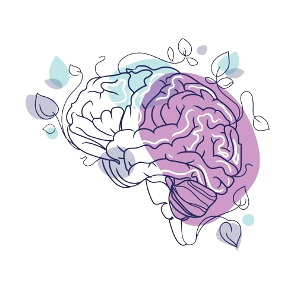

EQUILÍBRIO
MENTAL
Saiba tudo sobre
a Ansiedade
O que e Ansiedade ?
A ansiedade é uma reação natural do corpo, desencadeada em momentos de tensão ou estresse. Essa reação caracteriza-se por sintomas cognitivos e físicos, dentre eles o medo, estado de alerta e fuga, respiração acelerada, pelos ouriçados, taquicardia e suor.
Quais os sintomas da Ansiedade?
Sintomas físicos: coração acelerado ou desritmado , aumento da frequência respiratória ou falta de ar, tensão muscular, dor de cabeça.
Sintomas comportamentais: irritabilidade, impulsividade, agressividade, ritmo de fala acelerado,
Sintomas cognitivos: problemas de concentração e de memória, excesso de preocupação, dificuldade de tomada de decisão, problemas para dormir ou na qualidade do sono.
Sintomas emocionais: sentimento de incapacidade, tristeza, nervosismo, pensamento de tragédia iminente.